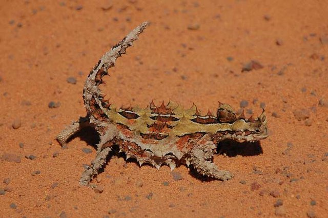

Os diabos-espinhosos são animais com hábitos solitários. Na maior parte do tempo, vivem sozinhos e costumam se agrupar apenas durante a época de acasalamento. Nesse período, eles vão para lugares específicos de encontro. Durante a fase do namoro, um macho se aproxima da fêmea e balança a cabeça. Se a fêmea estiver interessada, eles vão acasalar. Se a fêmea não estiver interessada, ela vai se afastar do macho, girando várias vezes no chão, e ficará esperando que outro macho se aproxime dela. O acasalamento e a postura dos ovos ocorre entre Setembro e Janeiro. São postos de 3 a 10 ovos que eclodem 3 a 4 meses depois. O diabo-espinhoso atinge a maturidade aos 3 anos e crê-se que vive 20 anos em estado selvagem.
A reprodução dos diabos-espinhosos ocorre no outono. Uma fêmea deposita de 3 a 10 ovos em sua toca e, após três meses, os filhotes eclodem. Um diabo espinhoso pode viver até 20 anos, e a maioria atinge essa idade devido aos poucos predadores que um lagarto coberto de espinhos tem. Infelizmente, apesar de serem difíceis de comer, os diabos-espinhosos são caçados por cobras e pássaros como o abutre-de-peito-preto. Embora muitas vezes sejam descartados sem serem consumidos, os lagartos podem morrer quando são atacados. Um diabo espinhoso pode viver até 20 anos. E a maioria atinge essa idade devido aos poucos predadores que um lagarto coberto de espinhos tem.